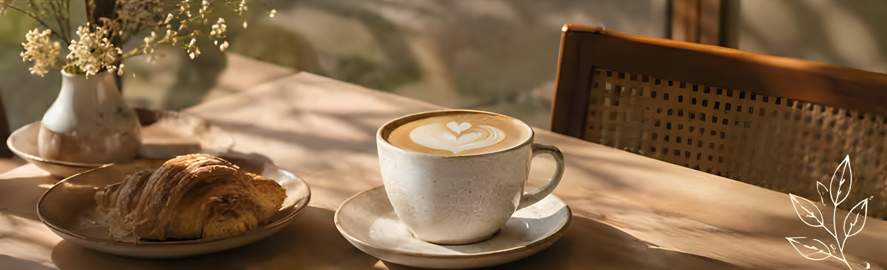
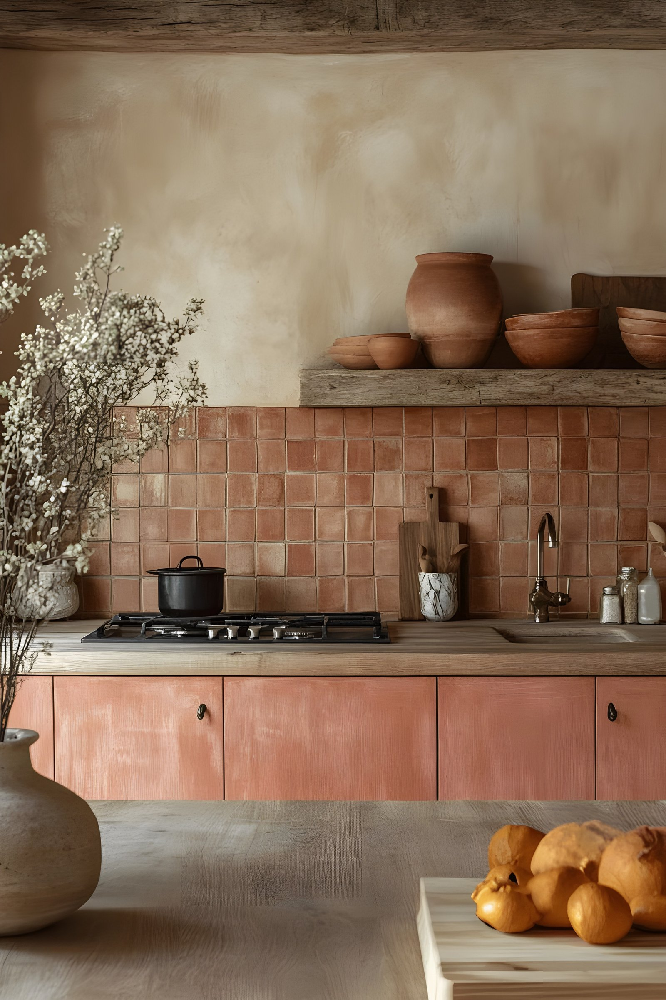
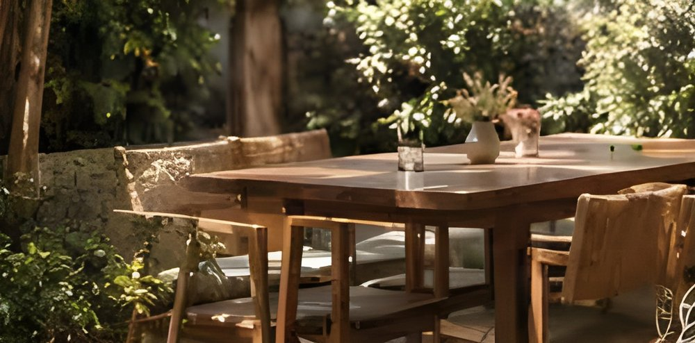

Sobre nosotros
Más que una cafetería,
un ritual.
Fika Ritual es una cafetería de especialidad, restó y panadería artesanal, ubicada en Del Viso, Pilar, Buenos Aires. Nuestra propuesta combina café, gastronomía y una experiencia de pausa y encuentro.

El origen
Fika, una tradición
que nos inspira.
Fika hace referencia a una tradición sueca relacionada con hacer una pausa para tomar café y compartir algo para comer. En nuestro caso, la idea del café se lleva más allá, de simplemente consumir una bebida; se busca generar un momento de disfrute, tranquilidad y conexión.
Nuestra esencia
-
Café de
especialidadUna carta variada con diferentes preparaciones como espresso, lungo, cortado y más.
-
Panadería
artesanalPanes orgánicos de masa madre, con fermentación natural. También opciones con semillas y veganas.
-
Alimentación
conscienteOpciones vegetarianas y veganas, además de productos sin lácteos, sin azúcar o con ingredientes orgánicos.
-
Pastelería y
gastronomíaDesayunos, brunch, almuerzos, tortas, panificados y diferentes platos.

El espacio
Naturaleza, calma
y buena compañía.
El entorno también forma parte de la experiencia. El local combina espacios interiores y exteriores con presencia de vegetación, buscando generar una sensación tranquila y relajada.
